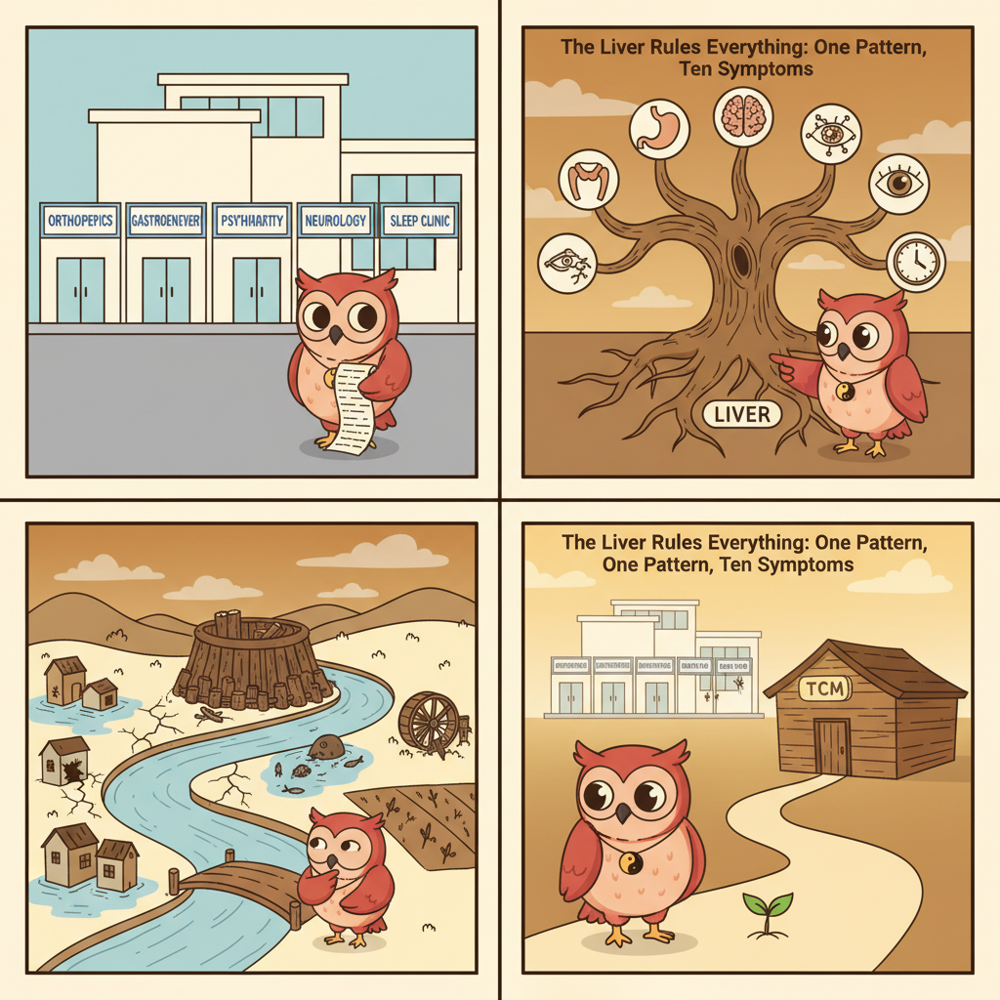

Your Shoulder Pain, Your IBS, Your Insomnia — They Might All Be Saying the Same Thing
Last month, a friend sent me a text that stopped me mid-scroll.
"I've seen the orthopedist for my shoulder. The gastroenterologist for my stomach. My psychiatrist for anxiety. And a sleep specialist for the insomnia. That's four doctors in six months. They all say something different. None of them talk to each other. And I still don't feel better."
She paused. Then: "Am I just falling apart in four unrelated ways?"
I wrote back: You're not falling apart. You're just asking the wrong question.
The Specialist Carousel
If you've ever bounced between specialists, you know the routine. Shoulder pain sends you to orthopedics. Acid reflux sends you to gastroenterology. Anxiety sends you to psychiatry. Insomnia sends you to a sleep clinic. PMS sends you to gynecology.
Each specialist runs their tests. Each one finds something — or nothing. Each one gives you a diagnosis that makes sense within their narrow slice of the body. And each one hands you a prescription that treats that one symptom.
Nobody asks: what if all these symptoms are connected?
In Chinese medicine, this question isn't radical. It's the starting point.
And the answer, more often than you'd believe, points to a single organ.
The General Who Never Sleeps
In the Huangdi Neijing, the 2,200-year-old foundation text of Chinese medicine, the Liver is given a title: 将軍之官 — the General.
Not a filter. Not a detox organ. A general.
The Liver's job, in TCM, is to ensure the smooth, unobstructed flow of Qi — functional energy — throughout the entire body. Every organ, every tissue, every channel depends on the Liver keeping things moving. When the Liver does its job, you hardly notice it. When it doesn't, chaos erupts in every direction.
Think of a company where the CEO has a breakdown. The marketing team misses deadlines. The sales team loses clients. The finance department freezes. The IT systems crash. Each department's problem looks separate — but they all trace back to one office.
Your Liver is the CEO of your body. When it stagnates, every department files a complaint.
One Pattern, Ten Complaints
The TCM pattern is called Liver Qi Stagnation — the Liver's energy is stuck, backed up, unable to flow. And the symptoms it produces are bewilderingly diverse:
- Headaches. Especially temple headaches, or a band-like pressure around the head. The Gallbladder channel (the Liver's partner) runs along the sides of the head.
- Shoulder and neck tension. The Liver and Gallbladder channels travel through the shoulders and neck. When Qi stagnates here, those muscles tighten like a clenched fist that won't unclench.
- Frequent sighing. This is practically a diagnostic sign. Your body is trying to release the stuck energy through the breath. If you find yourself sighing throughout the day — not from sadness, just from something — your Liver is talking.
- IBS and digestive chaos. The Liver oversees the smooth flow of digestion. When it stagnates, the stomach rebels (acid reflux, bloating) and the intestines can't find their rhythm (alternating constipation and diarrhea).
- Anxiety, irritability, and mood swings. The Liver houses the Hun — the ethereal soul linked to vision, creativity, and emotional balance. When Liver Qi is stuck, emotions follow.
- Insomnia, especially waking between 1-3 AM. This is the Liver's time in the organ clock. Waking at this hour, mind racing, is a classic Liver Qi stagnation sign.
- PMS, menstrual pain, irregular cycles. The Liver channel passes through the reproductive system. Stagnant Liver Qi = painful, unpredictable cycles.
- Lump-in-throat sensation. Western medicine calls it globus hystericus — the feeling of something stuck in your throat that isn't physically there. TCM calls it Plum Pit Qi and traces it directly to Liver Qi stagnation rising up.
- Acid reflux and belching. The Liver's stagnation backs up into the Stomach, forcing its contents upward. Antacids treat the Stomach. They don't touch the Liver.
- Eye problems. The Liver "opens into the eyes." Dry eyes, blurry vision, bloodshot eyes — all can be Liver signals that an ophthalmologist's equipment won't detect.
Ten symptoms. Ten body systems. In Western medicine: ten different waiting rooms, ten different specialists, ten different prescriptions.
In Chinese medicine: one diagnosis.
The River Behind the Dam
Imagine a river that flows through a landscape of towns and farms. Upstream, near the river's source, a beaver builds a dam. The river slows. Then stops.
Downstream, five different towns experience five different crises.
The first town floods — water backs up where it shouldn't be. The second town runs dry — the dam stole its flow. The third town's fish die. The fourth town's mill stops turning. The fifth town's crops wither.
Each town calls its own emergency crew. Each crew diagnoses a different problem. Flooding. Drought. Dead fish. Broken equipment. Crop failure.
Nobody walks upstream to look at the dam.
This is what happens when Western medicine treats Liver Qi stagnation with a different specialist for every downstream symptom. The orthopedist relaxes the shoulder muscles. The gastroenterologist prescribes a PPI for the reflux. The psychiatrist gives an SSRI for the anxiety. The sleep doctor recommends melatonin.
Each treatment makes sense in isolation. None of them removes the dam.

What Your Lab Tests Won't Find
Here's the part that frustrates people most: your blood work will probably be normal. Liver enzymes? Normal. Thyroid panel? Normal. Inflammation markers? Normal.
This is because Liver Qi stagnation is a functional problem, not a structural one. The organ isn't damaged. The Qi — the energy, the movement, the flow — is stuck. You can't biopsy energy. You can't CT-scan a traffic jam.
So the tests come back clean, and you're told nothing is wrong. Meanwhile, your body is sending you ten different signals that something absolutely is wrong — and they're all pointing in the same direction.
What You Can Do Today
If any of this sounds familiar, the good news is that Liver Qi stagnation responds beautifully to simple, consistent changes:
- Move. Not necessarily intense exercise — just move. Walk. Stretch. Dance badly in your kitchen. The Liver craves motion. Stagnant Qi is like a pond; movement is the stream that connects it back to the river.
- Express. The Liver processes emotion — especially frustration, anger, and resentment. If you swallow these feelings, your Liver swallows them too. Talk to someone. Write it down. Scream into a pillow. The Liver doesn't need the emotion gone; it needs it out.
- Eat sour. The sour taste, in TCM, enters the Liver channel. A splash of lemon in warm water in the morning. A dash of vinegar on your salad. Nothing extreme — just a nudge.
- Go to bed before eleven. The Liver's peak repair window is 1-3 AM. If you're awake during this window — scrolling, worrying, staring at the ceiling — your Liver never gets its maintenance shift.
- Drink less. Alcohol hits the Liver directly. You don't need to quit entirely (though your Liver wouldn't complain), but every drink adds another log to the dam.
These aren't magic. They're mechanics. A stuck door doesn't need a new door — it needs someone to oil the hinge.
The Question Worth Asking
Next time you find yourself googling three different symptoms at 2 AM, wondering if you need an orthopedist, a gastroenterologist, and a psychiatrist — pause.
Ask yourself: what if they're all saying the same thing?
What if your shoulder, your stomach, your sleep, and your mood aren't separate problems at all? What if they're five different alarms going off in five different rooms — all triggered by the same fire?
Your Liver has been running the show since before you were born. It knows what's wrong faster than any lab panel ever will. It just speaks in symptoms instead of words.
Maybe it's time to listen.
— Ollie